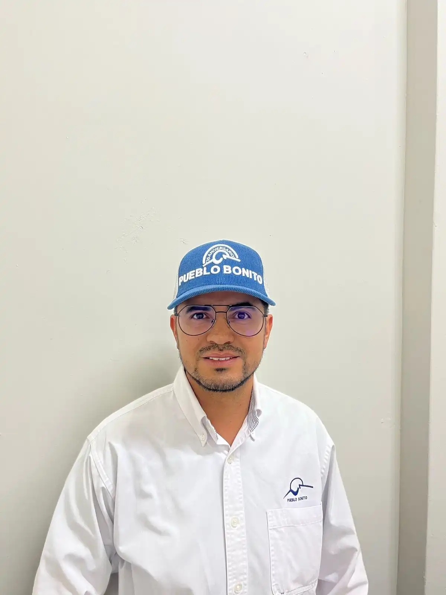

Sucursal Fresnillo
Ubicada en una zona estratégica de la ciudad, nuestra sucursal de Fresnillo abre sus puertas de lunes a viernes de 9:00 am a 7:00 pm, y los sábados de 9:00 am a 2:00 pm. Aquí encontrarás una gran selección de productos agropecuarios, respaldados por un equipo comprometido con brindarte asesoría técnica confiable y atención personalizada.
"Como agricultor en una zona alejada, siempre es difícil encontrar proveedores confiables, pero desde que empecé a trabajar con ellos, todo ha sido mucho más sencillo. Además de los buenos productos, me asesoran sobre qué utilizar en cada temporada."
José Luis Vázquez
Lo Nuevo de Fresnillo
Lo mejor del sectorIngenieros a tu servicio
En nuestra sucursal de Fresnillo, contamos con un equipo de ingenieros agrónomos altamente capacitados y con amplia experiencia en el sector agropecuario. Están disponibles para brindarte asesoría personalizada y ayudarte a elegir los productos más adecuados para tus necesidades.

Ing.
Ing.
Ignacio